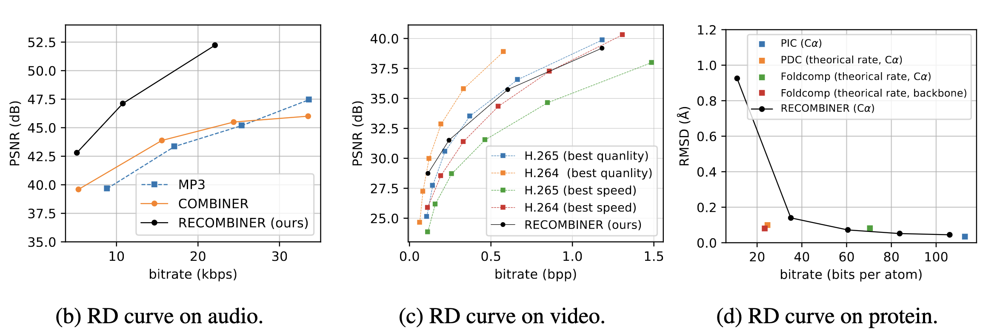
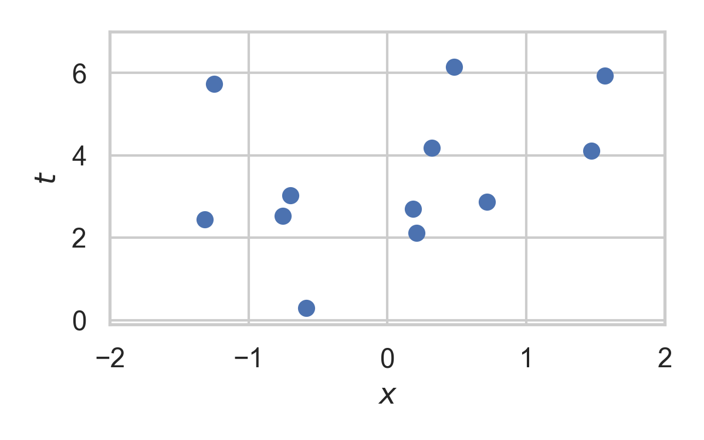
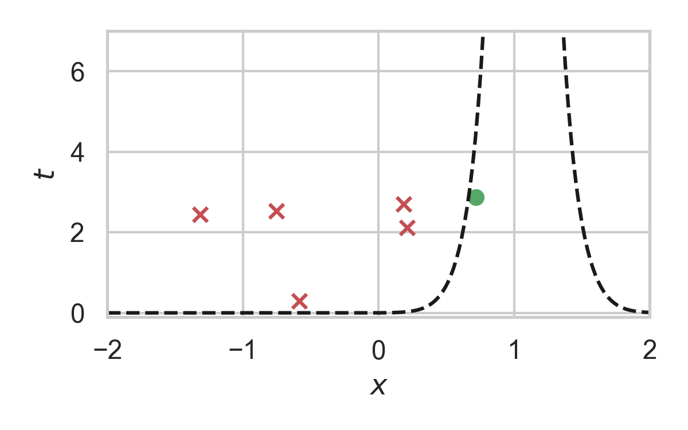
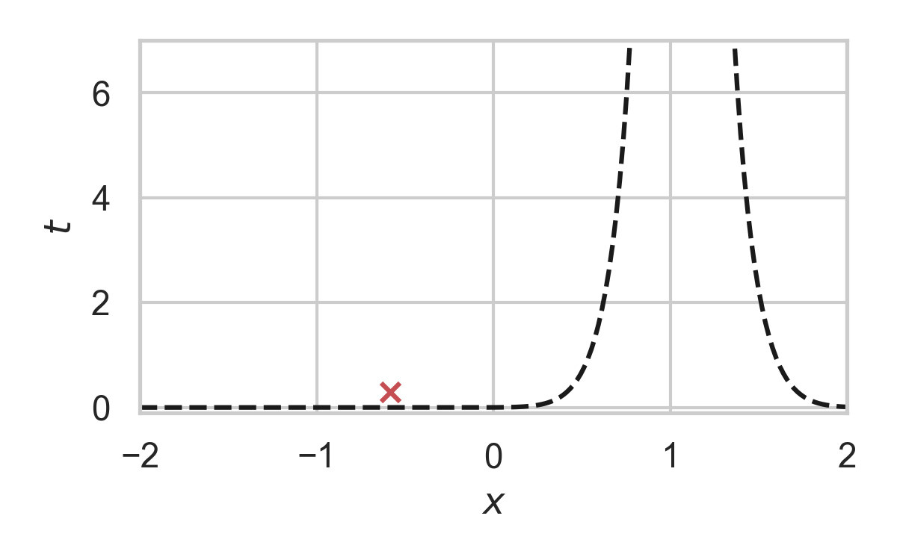
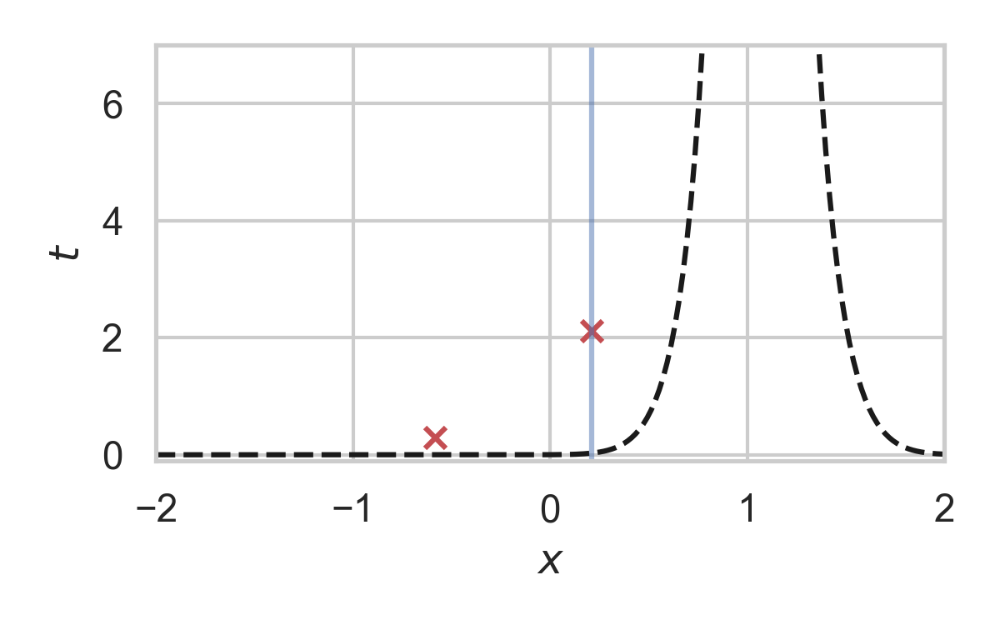

Relative Entropy Coding with Greedy Poisson Rejection Sampling
Gergely Flamich
29/09/2023
1. In Collaboration With


2. What is Relative Entropy Coding?
2.1. Lossy compression


2.2. Transform Coding as a Channel
Get an image \(Y \sim P_Y\)
Transform and quantize: \(X = f(Y)\)
Inverse transform to reconstruct: \(\hat{Y} = g(X)\)
What can we say about \(P_{X \mid Y}\)? Could we control it?
2.3. Relative Entropy Coding/Channel Simulation
Correlated r.v.s \(X, Y \sim P_{X, Y}\)
Alice receives \(Y \sim P_Y\)
Bob wants to simulate \(X \sim P_{X \mid Y}\)
How many bits does Alice need to send to Bob?
2.4. Relative Entropy Coding/Channel Simulation
How many bits does Alice need to send to Bob?
When common randomness \(S\) available: \[ H[X \mid S] \leq I[X; Y] + \log (I[X; Y] + 1) + 4. \]
\(H[X]\) - Amount of information in \(P_X\)
\(I[X; Y]\) - Information in \(P_{X, Y}\) compared to \(P_X \otimes P_Y\)
\(I[X; Y]\) can be finite even when \(H[X]\) is infinite!
3. Applications of Relative Entropy Coding
3.1. Lossy Compression with Realism Constraints
- Theis & Agustsson (2021):
- REC provably better than quantization.
- Theis et al. (2022):

3.2. Model Compression

Image from Blundell et al. (2015)
3.3. Model Compression
Havasi et al. (2018): MIRACLE

3.4. Data Compression with INRs

Image from Dupont et al. (2021)
Problem: Post-training quantization severely impacts performance!
3.5. Compress variational INRs!
COMBINER: COMpression with Bayesian Implicit Neural Representations
4. Current limitations of REC
Current REC algorithms are:
- Too slow (Agustsson & Theis, 2020):
- Average runtime of any general REC algorithm must scale at least \(2^{I[X; Z]}\)
- Too limited:
- Uniforms only (Agustsson & Theis, 2020)
- 1D unimodal distributions only (F et al., 2022)
- Too much codelength overhead
Open problem: \(\mathcal{O}(I[X; Z])\) runtime when both \(P_{Z \mid X}\) and \(P_Z\) are multivariate Gaussian?
5. Take home message: Overview and Applications
- REC is a stochastic compression framework
- Alternative to quantization and entropy coding
- It finds applications in:
- Lossy compression with realism constraints
- Model compression
- Compressing Bayesian INRs
- Currently still too slow or limited
6. Greedy Poisson Rejection Sampling
6.1. Poisson Processes
- Collection of random points in space
- Focus on spatio-temporal processes on \(\mathbb{R}^D \times \mathbb{R}^+\)
- Exponential inter-arrival times
- Spatial distribution \(P_{X}\)
6.2. Example with \(P_{X} = \mathcal{N}(0, 1)\)

6.3. Example with \(P_{X} = \mathcal{N}(0, 1)\)

6.4. Example with \(P_{X} = \mathcal{N}(0, 1)\)

6.5. Example with \(P_{X} = \mathcal{N}(0, 1)\)

6.6. Example with \(P_{X} = \mathcal{N}(0, 1)\)

6.7. Example with \(P_{X} = \mathcal{N}(0, 1)\)

6.8. Example with \(P_{X} = \mathcal{N}(0, 1)\)

6.9. Example with \(P_{X} = \mathcal{N}(0, 1)\)

6.10. Greedy Poisson Rejection Sampling
6.11. GPRS with \(P_X = \mathcal{N}(0, 1), P_{X \mid Y} = \mathcal{N}(1, 1/16)\)

6.12. GPRS with \(P_X = \mathcal{N}(0, 1), P_{X \mid Y} = \mathcal{N}(1, 1/16)\)

6.13. GPRS with \(P_X = \mathcal{N}(0, 1), P_{X \mid Y} = \mathcal{N}(1, 1/16)\)

6.14. GPRS with \(P_X = \mathcal{N}(0, 1), P_{X \mid Y} = \mathcal{N}(1, 1/16)\)

6.15. GPRS with \(P_X = \mathcal{N}(0, 1), P_{X \mid Y} = \mathcal{N}(1, 1/16)\)

6.16. GPRS with \(P_X = \mathcal{N}(0, 1), P_{X \mid Y} = \mathcal{N}(1, 1/16)\)

6.17. GPRS with \(P_X = \mathcal{N}(0, 1), P_{X \mid Y} = \mathcal{N}(1, 1/16)\)

6.18. How to find the function?
\[ \sigma(h) = \int_0^h \frac{1}{w_{X \mid Y}(\eta) - \eta \cdot w_X(\eta)} \, d\eta, \]
where \[ w_X(h) = \mathbb{P}_{Z \sim P_X}\left[\frac{dP_{X \mid Y}}{dP_X}(Z) \geq h \right] \] \[ w_{X \mid Y}(h) = \mathbb{P}_{Z \sim P_{X \mid Y}}\left[\frac{dP_{X \mid Y}}{dP_X}(Z) \geq h \right] \]
6.19. Analysis of GPRS
Codelength
Runtime
\[ \mathbb{E}[K \mid Y] = \exp(D_{\inf}[P_{X \mid Y} \Vert P_X]) \]
6.20. Speeding up GPRS
6.21. Fast GPRS with \(P_X = \mathcal{N}(0, 1), P_{X \mid Y} = \mathcal{N}(1, 1/16)\)

6.22. Fast GPRS with \(P_X = \mathcal{N}(0, 1), P_{X \mid Y} = \mathcal{N}(1, 1/16)\)

6.23. Fast GPRS with \(P_X = \mathcal{N}(0, 1), P_{X \mid Y} = \mathcal{N}(1, 1/16)\)

6.24. Fast GPRS with \(P_X = \mathcal{N}(0, 1), P_{X \mid Y} = \mathcal{N}(1, 1/16)\)

6.25. Fast GPRS with \(P_X = \mathcal{N}(0, 1), P_{X \mid Y} = \mathcal{N}(1, 1/16)\)

6.26. Fast GPRS with \(P_X = \mathcal{N}(0, 1), P_{X \mid Y} = \mathcal{N}(1, 1/16)\)

6.27. Analysis of faster GPRS
Now, encode search path \(\pi\).
\(H[\pi] \leq I[X; Z] + \log(I[X; Z] + 1) + \mathcal{O}(1)\)
\(\mathbb{E}[\lvert\pi\rvert] = \mathcal{O}(I[X; Z])\)
7. References
7.1. References I
- E. Agustsson and L. Theis. "Universally quantized neural compression" In NeurIPS 2020.
- C. Blundell, J. Cornebise, K. Kavukcuoglu and D. Wierstra. Weight uncertainty in neural network. In ICML 2015.
- E. Dupont, A. Golinski, M. Alizadeh, Y. W. Teh and Arnaud Doucet. "COIN: compression with implicit neural representations" arXiv preprint arXiv:2103.03123, 2021.
7.2. References II
- G. F. “Greedy Poisson Rejection Sampling” NeurIPS 2023, to appear.
- G. F.*, S. Markou*, and J. M. Hernandez-Lobato. "Fast relative entropy coding with A* coding". In ICML 2022.
- D. Goc and G. F. “On Channel Simulation Conjectures” unpublished.
7.3. References III
- Z. Guo*, G. F.*, J. He, Z. Chen and J. M. Hernandez Lobato, “Compression with Bayesian Implicit Neural Representations” NeurIPS 2023, to appear.
- P. Harsha, R. Jain, D. McAllester, and J. Radhakrishnan, “The communication complexity of correlation,” IEEE Transactions on Information Theory, vol. 56, no. 1, pp. 438–449, 2010.
- M. Havasi, R. Peharz, and J. M. Hernández-Lobato. "Minimal Random Code Learning: Getting Bits Back from Compressed Model Parameters" In ICLR 2019.
7.4. References IV
- J. He*, G. F.*, Z. Guo and J. M. Hernandez Lobato, “RECOMBINER: Robust and Enhanced Compression with Bayesian Implicit Neural Representations” unpublished.
- C. T. Li and A. El Gamal, “Strong functional representation lemma and applications to coding theorems,” IEEE Transactions on Information Theory, vol. 64, no. 11, pp. 6967–6978, 2018.
7.5. References V
- L. Theis and E. Agustsson. On the advantages of stochastic encoders. arXiv preprint arXiv:2102.09270.
- L. Theis, T. Salimans, M. D. Hoffman and F. Mentzer (2022). Lossy compression with Gaussian diffusion. arXiv preprint arXiv:2206.08889.